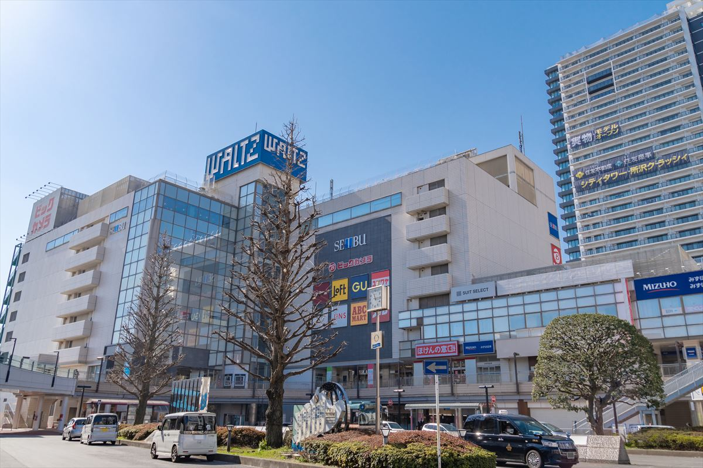
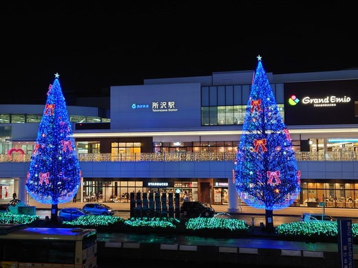
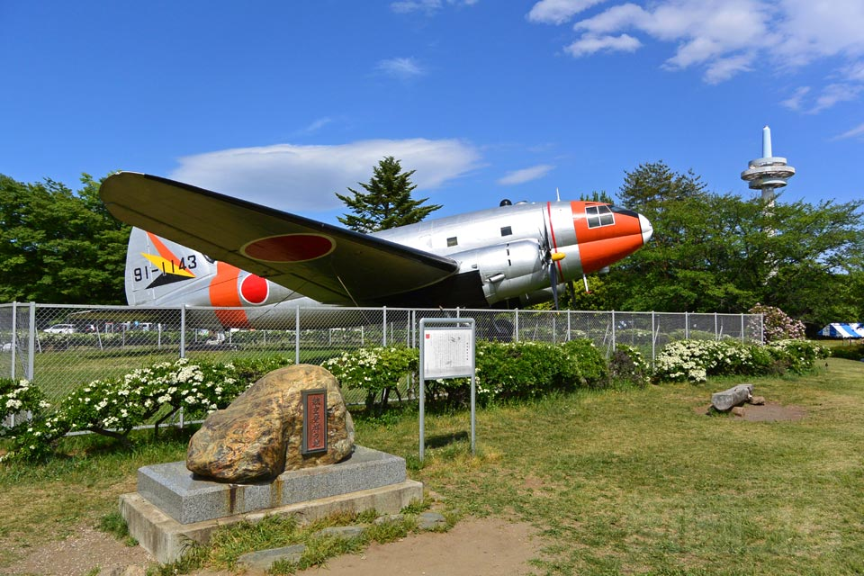

所沢の魅力
所沢駅

所沢駅は新宿線と池袋線が交差し、都心や観光地へのアクセスが便利です。

夜の所沢駅は、イルミネーションがとても綺麗です。
航空公園

日本で最初の飛行場「所沢飛行場」の跡地で、日本の航空発祥の地として知られています。
自然溢れる園内では、春には桜、秋には紅葉を眺められ、小さな子どもが楽しめる「子ども広場」や、芝生の広場もあり、子ども広場には複合遊具が揃っているので、子ども連れにもおすすめです。
また、所沢航空記念公園内には、所沢航空発祥記念館があります。
ここにはかつて運用されていた航空機が多数展示されており、見るだけでなく、実際に乗ることのできる展示物や、フライトシミュレーター、重力体験装置など、操縦士の気分を味わえる設備もあります。
さらに、大型映像館で迫力のある映像を見たり、参加型イベントに参加することで航空機の原理や歴史を学んだりできます。
西武ドーム
西武ドームは埼玉西武ライオンズの本拠地です。
西武ドームは壁面がないので、日本で唯一場外ホームランがあり得るドームです。
西武ドームのスポット一覧
西武園ゆうえんち
西武園ゆうえんちではアトラクションや食べ物、専用通貨を使うなどして昭和レトロを体験できます。
トトロの森
戻る